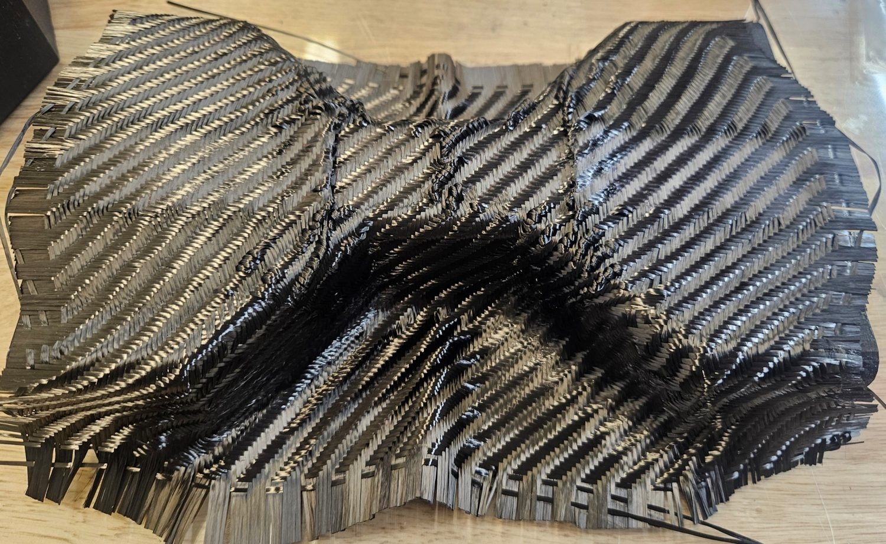
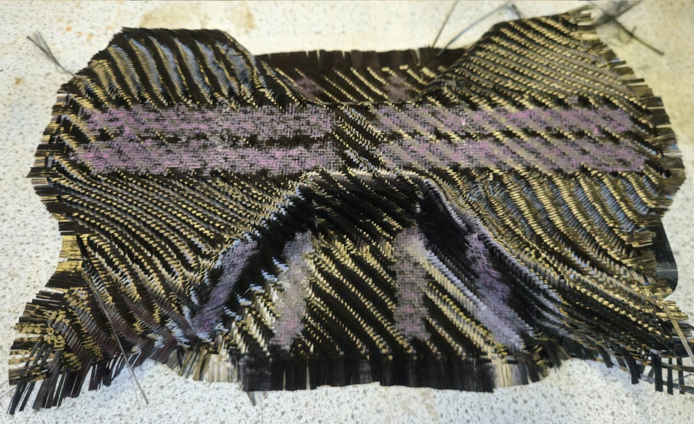
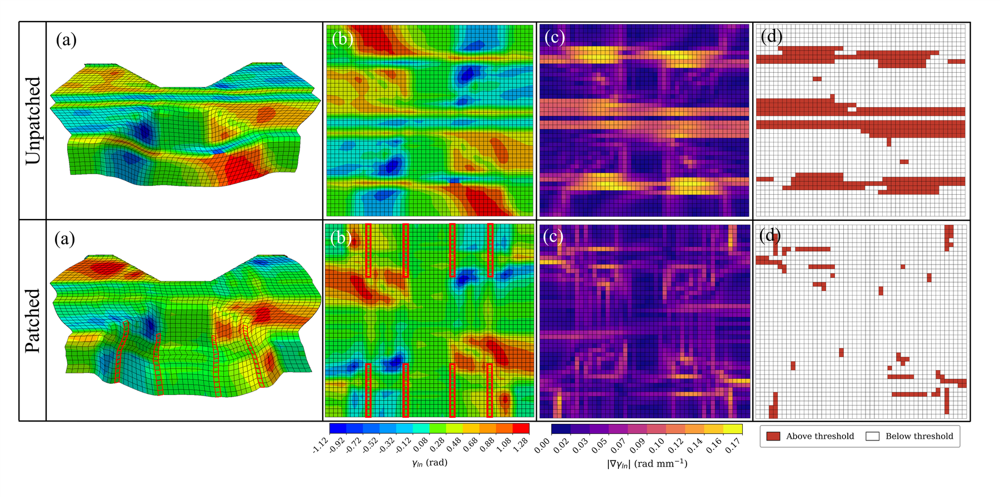
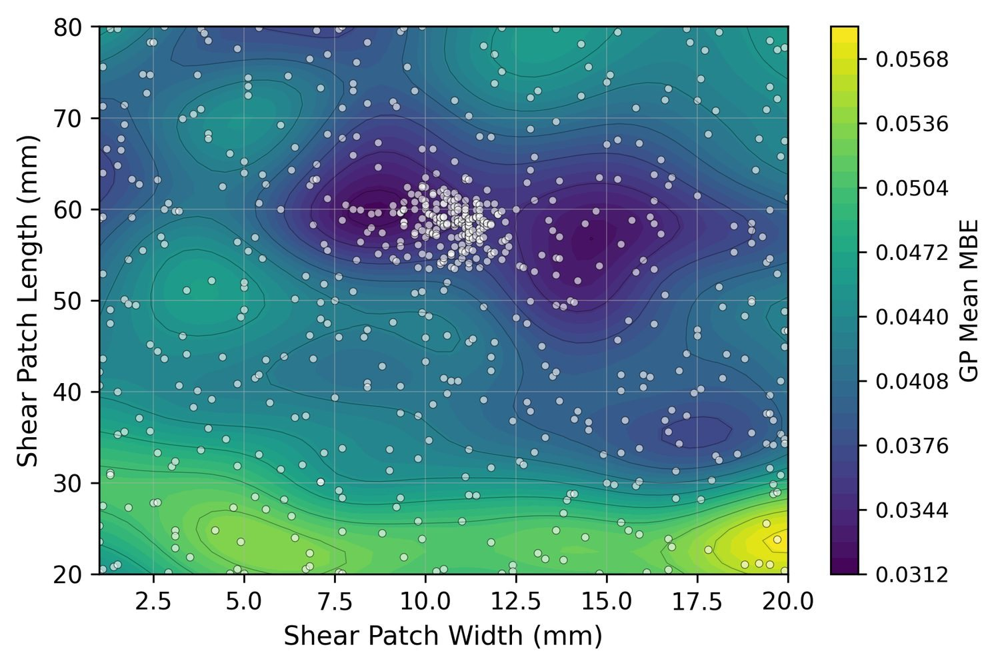
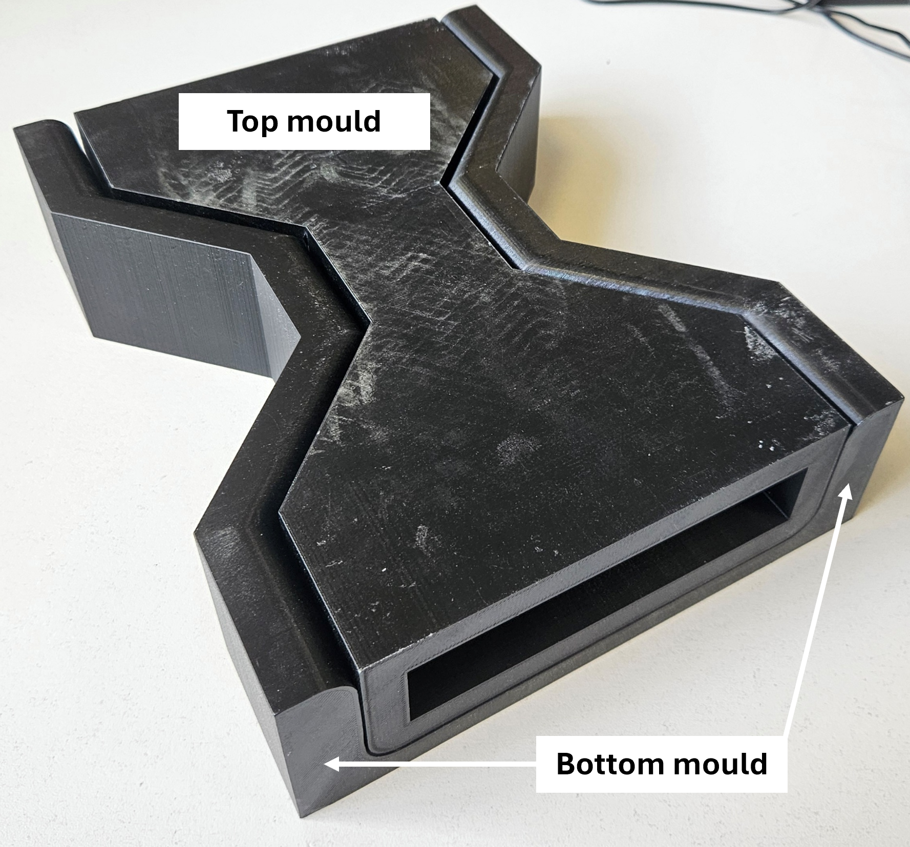
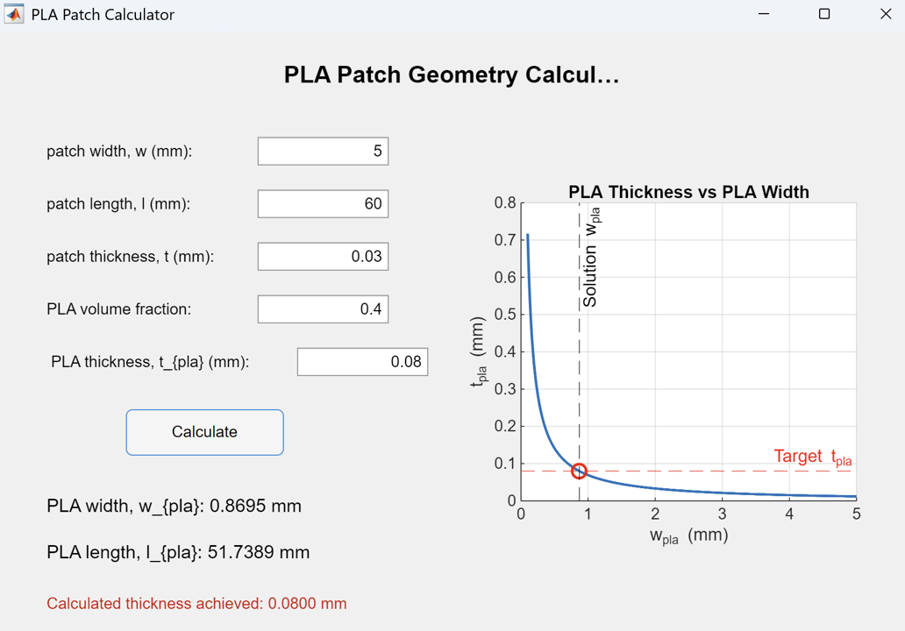
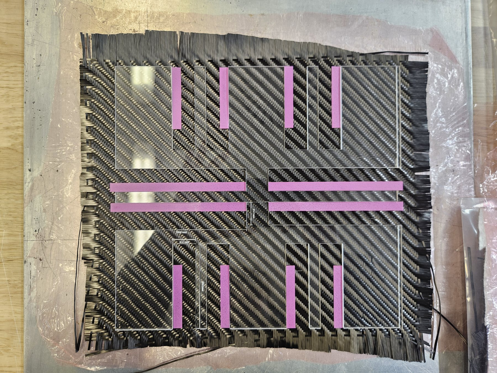
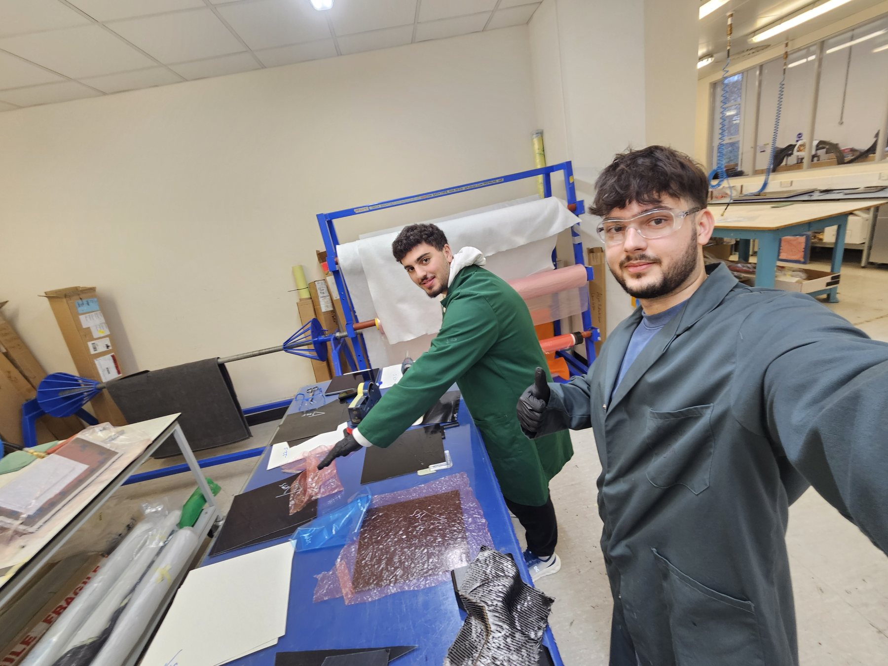
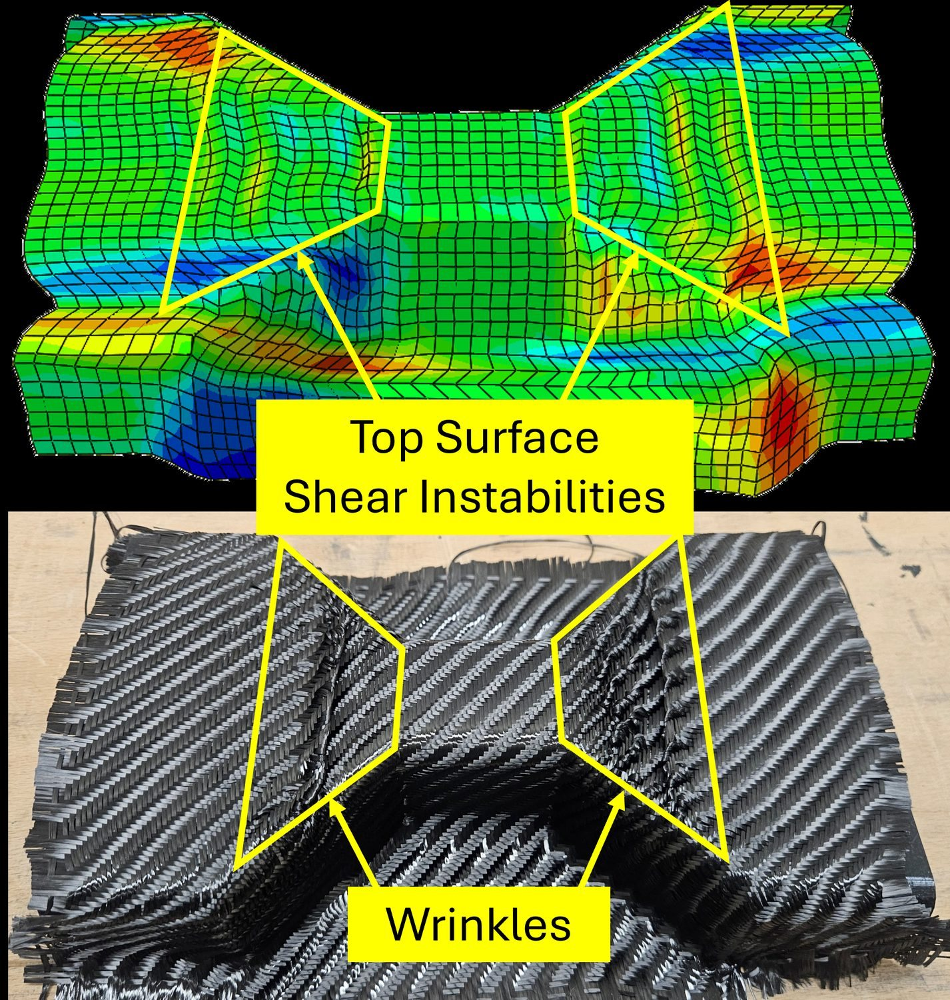

Bristol Composites Institute · University of Bristol · 2025 to 2026
Using fast simulations to guide patches for automated fabric forming
My research asked whether numerical shear instabilities in a fast forming simulation could act as proxies for real defects and guide patch optimisation, for dry carbon fabric formed in one step between closing male and female moulds.
My contribution
I developed a shear strain gradient metric, built a modular Python framework linking an existing Abaqus model to Bayesian optimisation, and ran physical forming trials to test the numerical indicators.
Completed; joint paper in preparation

A formed dry carbon fabric sample from my experimental trials.
What the forming trials demonstrated
Physical comparison
Top surface wrinkle suppressedThe optimised patch configuration suppressed the fold seen in the unpatched trial.
Numerical proxy
Qualitative agreementDecreasing simulation metric followed the direction of the observed top surface improvement.
Experimental scope
Four configurations testedUnpatched, starting dual patches, optimised dual patches and compression patches only. Material damage remained a design consideration.

Without patchesWith patches
Formed without patches (left of the handle) and with patches (right). Drag to compare.
The problem in single step forming
I chose this project to learn how machine learning could be applied to engineering, and to work with the Bristol Composites Institute.
In matched mould forming, nobody tensions the fabric once the moulds close, so wrinkle prevention must be designed in beforehand. Local stiffness patches can redistribute deformation, but larger or stiffer is not always better: they can over-constrain the fabric or move the problem elsewhere.

From simulation output to an optimisation score: formed geometry, shear strain, shear gradient and threshold mask. Research report, p. 5.
Can numerical instabilities reveal real defects?
I used the existing superposition model developed by Chen et al. in Abaqus/Explicit. Its independently meshed fabric and patch components make it practical to change patch geometry without rebuilding the host mesh. At the coarse discretisation used for fast evaluations, it produces alternating shear strain bands rather than resolving the full geometry of an out of plane wrinkle.
That was the central research question: could those instability signatures still tell us something physically useful? To turn the pattern into an optimisation objective, I developed Mean Band Exceedance from the shear strain gradient. It scores the sharp spatial changes associated with localisation, rather than treating every region of high shear as a defect.
I compared candidate metrics and swept the threshold used to separate the localised bands from the smoother background. This gave me a numerical score that could distinguish the unpatched and mitigated benchmark cases, ready to be evaluated automatically after each simulation.
One forming simulation in the existing Abaqus/Explicit model. The workflow set up, ran and scored simulations like this automatically. Select the video to play it.
Building the model to optimisation workflow
I built the Python workflow that sets patch geometry and stiffness, submits the Abaqus job, waits for it, extracts the output database and calculates the metric.
When my early scripts became hard to manage, I reorganised them into separate simulation, metric, surrogate and acquisition components, so each could change independently. I am proudest of this structure, because I could change one part without breaking the others.

The surrogate’s predicted metric over shear-patch width and length; sampled designs (white) cluster in a low-value region.
Searching for an effective patch design
A Gaussian process surrogate estimated the response between simulations, and Expected Improvement chose the next design by balancing promising and uncertain regions.
After a two-variable benchmark of shear patch width and stiffness, I ran a five-variable study of shear and compression patch widths, lengths and stiffness, with positions fixed.
The results showed an area-to-stiffness balance: broad, stiff patches over-constrained the fabric and small, compliant ones did little, giving a physical meaning to the low-score region.

The matched PLA moulds used for the forming trials. Research report, experimental methods.
Making the physical comparison possible
I wanted to find out whether the patterns in the fast simulation corresponded to what happened to real fabric. I chose to spend the remaining project time on laboratory trials rather than add more variables to the optimisation, and compared four configurations: unpatched, starting dual patches, optimised dual patches and compression patches only.
I designed and 3D-printed the male and female bow-tie moulds in PLA at full scale, checking the fit and tolerances through iterative print trials. I cut the woven carbon fabric to 250 × 270 mm, allowing extra material beyond the simulated domain for fraying at the edges. Keeping the tooling and specimen preparation consistent made the patch configuration the intended change between trials.
This also meant learning to work with the laboratory equipment, preparing risk assessments and following the operating procedures in the composites laboratory and clean room. Turning the numerical study into something I could manufacture and test was a substantial part of the work.

The MATLAB tool I built to calculate print dimensions from the target patch volume. Research report, Appendix D.
Calculating printable patches
The patch geometry used in the model could not simply be sent to the printer: the required thin PLA layer had to be produced from a thicker printed piece. I used conservation of volume to calculate smaller print dimensions and the material fraction, allowing the PLA to spread laterally under heat and pressure towards the target footprint.
I implemented the calculation in a MATLAB interface. It takes the target width, length, thickness and PLA volume fraction, then finds print dimensions compatible with the selected print thickness. That let me connect the simulated patch geometry to a practical manufacturing choice instead of choosing the printed size by eye.
After pressing, I measured the patch edges with digital callipers at three points along each edge and compared the dimensions with the calculation. This was a check on the fabrication method; it did not mean that every patch matched the target dimensions exactly.

The acrylic template locating patches on the fabric before pressing.

Preparing material in the composites laboratory.
Controlling placement and hot pressing
Patch position was part of the experiment, so I used a laser-cut acrylic template with openings at the specified coordinates. The template located the printed PLA on the fabric, and release film above and below prevented it adhering to the press tooling.
I consolidated the patches in the hot press at 180 °C and a 30-tonne load for 20 minutes. Specimen dimensions, the placement method and the press settings provided a consistent preparation procedure across the configurations, so I could interpret the forming differences against a controlled setup.
After forming, I used spray binder to retain the shape before removing the fabric from the mould and inspecting it. Working through preparation, pressing, forming and inspection made me look beyond the simulation output to the practical details that determine whether an experimental comparison is useful.

Simulated shear instabilities (top) and the wrinkles in the formed fabric (bottom).
What the trials showed
The unpatched sample formed a pronounced top surface fold in the location and orientation of the simulated instability. With the starting patches, the fold became a reduced ridge; the optimised configuration suppressed the top surface wrinkle. Those distinct outcomes followed the direction of the decreasing metric, supporting the use of the coarse simulation as a guide to patch design.
The comparison also helped define where the proxy was useful. The optimised dual patch configuration caused local fibre breakage, while the compression-only trial avoided that top surface damage. A predicted severe recess instability did not produce the corresponding defect in the physical sample. These observations pointed towards the interaction between patch types, boundary conditions and placement as the next questions to investigate.
The result was qualitative evidence that a fast model can guide useful design decisions without resolving every wrinkle geometrically. Position, material compatibility and the model’s treatment of contact and free fabric edges still need work.
What I learned from connecting simulation and experiment
I set out to learn machine learning, but the forming trials taught me most: they exposed gaps in my understanding of the model and sharpened the research question.
I chose my first metric too quickly and had to revisit it when the optimisation misbehaved; a working loop still needs a well-founded objective.
Next time I would study the simulation code and literature earlier, run an early trial and write alongside the research.
Tools and methods
Python, Abaqus/Explicit, finite element post-processing, Gaussian processes, Bayesian optimisation, experimental design, CAD, 3D printing and physical forming trials, experimental design, laboratory risk assessment, matched-mould tooling, hot pressing and dimensional inspection